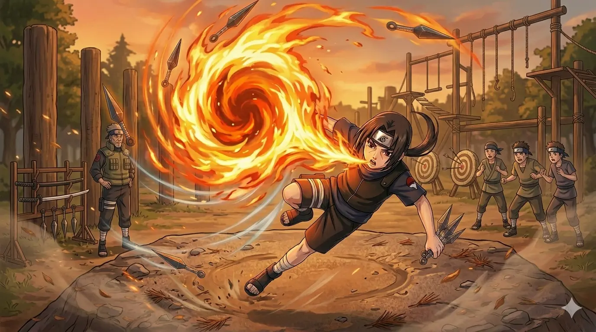

Childhood
Itachi Uchiha was born into the prestigious Uchiha clan in Konohagakure. From a very young age, he showed exceptional intelligence and talent, quickly surpassing others in the ninja academy. Despite his calm and quiet personality, Itachi carried a deep awareness of the harsh realities of war, which shaped his mature mindset far beyond his years.